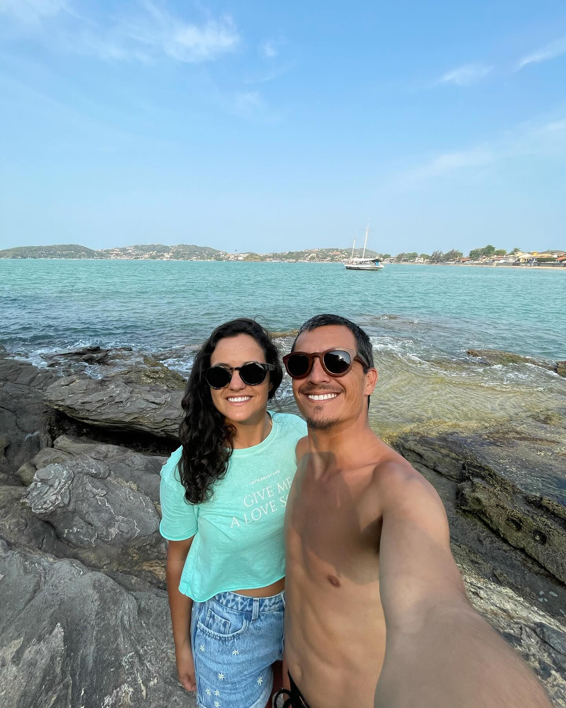
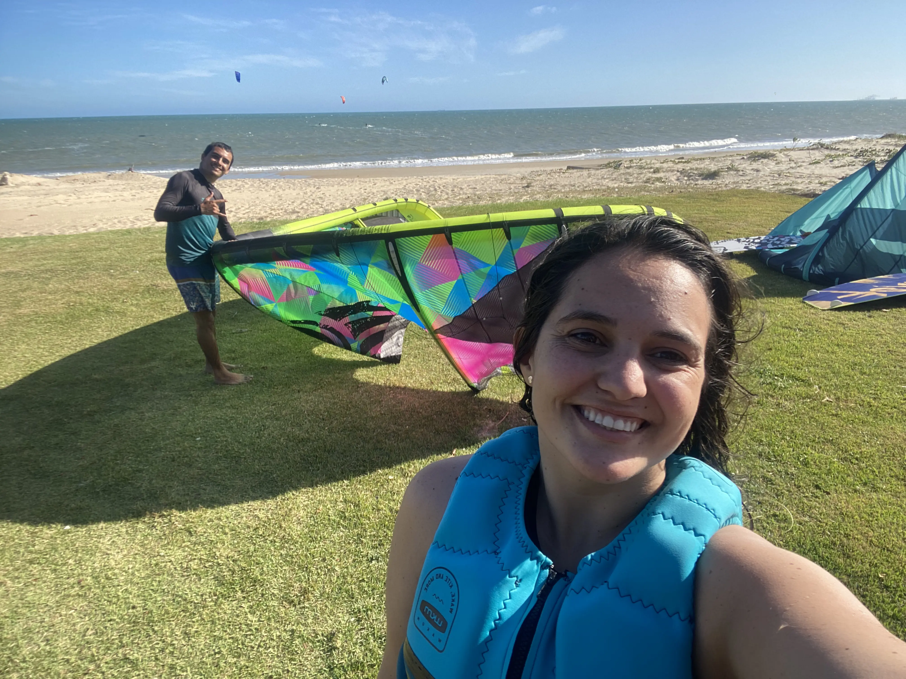

Quem Somos

Seja bem-vindo!
Nós somos o Arthur e a Ju! Moramos em Imbituba - SC, perto da incrível Lagoa de Ibiraquera, e somos apaixonados por Kitesurf.

Nosso Objetivo?
Criamos este perfil com o objetivo de compartilhar nossa paixão pelo kite e ajudar você a descobrir os melhores picos de velejo pelo Brasil.
A nossa missão vai além de mostrar simplesmente locais; queremos proporcionar a experiência completa de quem pratica o esporte e se conecta com a natureza, o vento e as ondas.